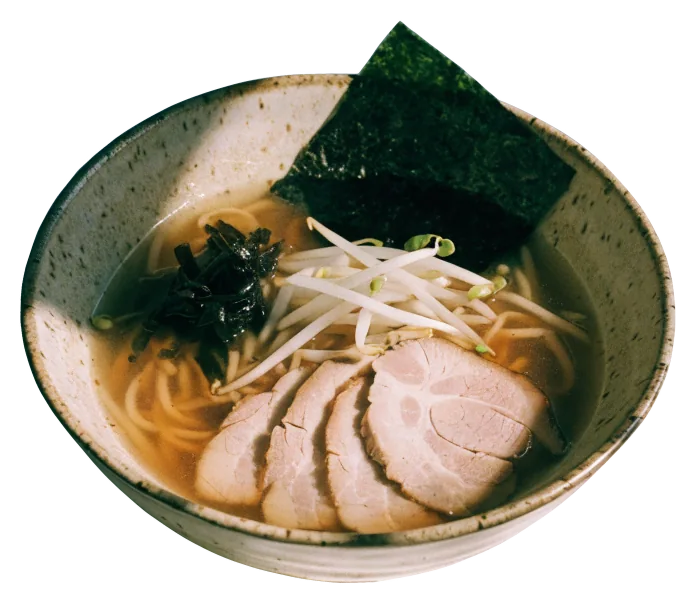
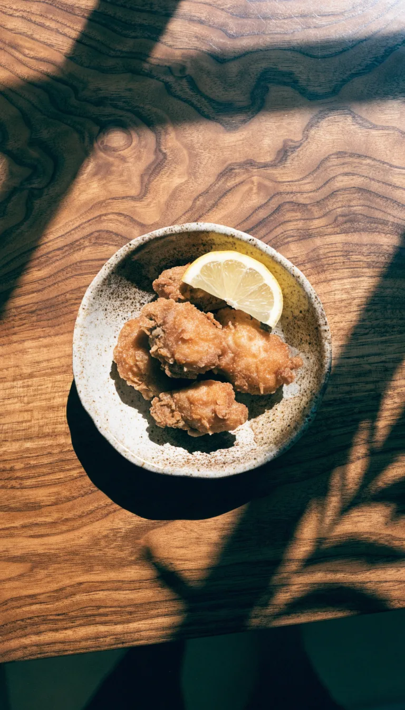
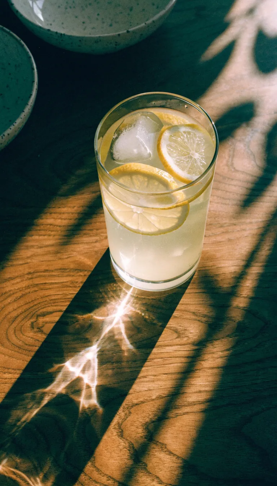

Shoyu-Ramen

Klare Sojabrühe mit Schweinebauch, Wakame und Nori.

Ramen, Okonomiyaki, Takoyaki, Karaage und Katsudon in Uhlenhorst, Papenhuder Str. 22.
Ramen in mehreren Brühen, dazu Okonomiyaki, Takoyaki, Karaage und Katsudon.
Die Küche kocht durchgehend, täglich ab 12 Uhr, sonntags ab 14 Uhr.


Alles gibt es auch zum Mitnehmen. Bei gutem Wetter sitzt man draußen.
Foto: Michael Ortmann · Google Maps
Eine Auswahl dessen, was aus der Küche kommt. Die vollständige Karte mit allen Preisen liegt im Lokal aus.

Klare Sojabrühe mit Schweinebauch, Wakame und Nori.

Mit Chashu, Mais, Hackfleisch und Zuckerschoten.
Die runden Teigbällchen aus Osaka, gut zum Teilen.

Mariniertes, frittiertes Hähnchen nach japanischer Art.
Paniertes Schnitzel, mit Ei und Zwiebeln auf Reis.

Hausgemacht. Dazu gibt es Kaffee, Bier und Wein.
Telefonisch geben wir gern Auskunft, auch zu Desserts und vegetarischen Gerichten.
040 87973186Sonntags öffnen wir um 14 Uhr. Wer einen Tisch möchte, ruft kurz an: 040 87973186.

Okonomiyaki und Takoyaki: Nicht nur Suppe kommt hier aus der Küche.
Dazu Karaage und Katsudon, und zum Schluss ein Dessert. Alles auch zum Mitnehmen.
22087 Hamburg-Uhlenhorst
In einer ruhigen Ecke von Uhlenhorst. Das große Fenster mit der weißen Beklebung ist der Eingang.
Reservieren geht per Telefon. Montag bis Donnerstag bis 22 Uhr, Freitag und Samstag bis 23 Uhr, Sonntag von 14 bis 22 Uhr.
040 87973186